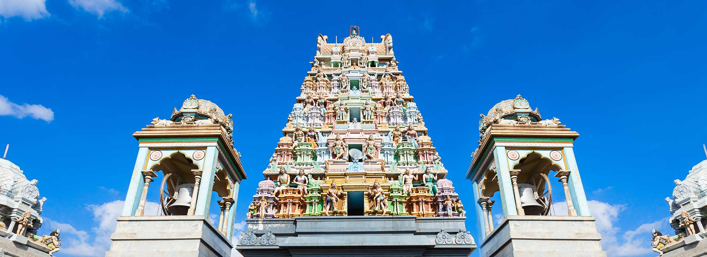
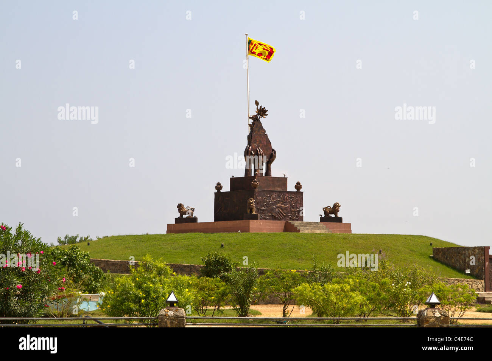

Jaffna Public Library (Jaffna District)

Jaffna Library is considered as one of the most significant historical and important places to visit in Jaffna. This library was opened in the year 1959. It was established by Alfred Duraiappah who was Mayor of Jaffna at that time. The construction of this library was similar to the Indo-Saracenic style. Jaffna Public Library is located in Jaffna, Sri Lanka. It is one of Jaffna's most notable landmarks, and is run by the Jaffna Municipal Council. The library was built in 1933 and burnt in 1981. During the early 1980s, it was one of the biggest libraries in Asia, containing over 97,000 books and manuscripts. Over a million books burned in the 1981 arson attack. Some ancient Sinhala and Tamil books were never recovered. In 2001, rehabilitation of the library was completed, with new structures being built and new books received, although its old books and manuscripts were not replaced. It is Sri Lanka's second main public Library, only rivalled by Colombo Public library The building's classical lines and beautiful proportions make it stand out architecturally. It contains lush gardens and has been modernized with new facilities such as free-wifi that was added in 2016
Thiruketheeswaram Kovil (Mannar District)
Thiruketheeswaram Kovil Hindu shrine is also famous as Ketheeswaram Temple or Tirukktsvaram in Sri Lanka. One of the ancient Hindu temples in Mannar area, it is always visited by the Hindu devotees. It overlooks neighboring Indias ancient Tamil port towns of Manthai and Kudiramalai. Now in its ruins, although got restored and renovated many times over the centuries, temple is visited by the worshippers of Shiva deity. Due to the ancient value of this temple, it is equally visited by explorers, including Hindu devotees and common travelers. This place surely tops the list of top places to visit in Mannar for all kinds of travelers!
Elephant Pass (Mullaiteevu District)
Elephant Pass, Northern Province, Sri Lanka is located in the gateway of Jaffna Peninsula. There are about 340km north from capital to here. It has an important military base and used to be the island's largest salt field. It has regularly been the site of battles during the civil war.Elephant Pass controls access to the Jaffna Peninsula, therefore it is referred to as the Gateway to Jaffna. It is very crucial as it is on the isthmus connecting the peninsula to the Sri Lankan mainland, and to territory in the Southern Jaffna peninsula. Elephant Pass connects the militarily significant town of Chavakacheri in the Jaffna peninsula to the Sri Lankan mainland